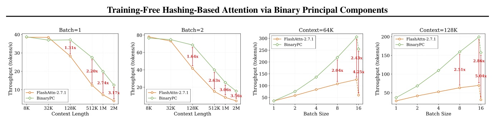
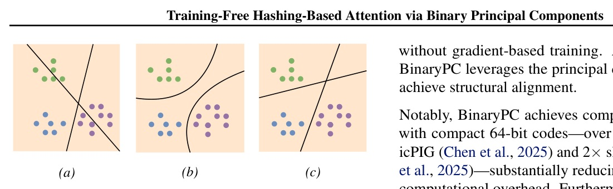
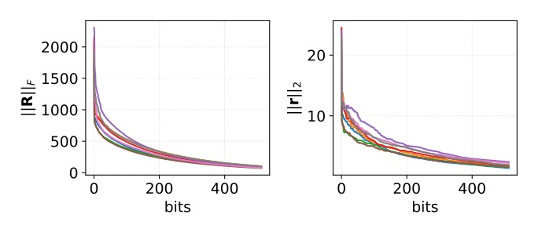
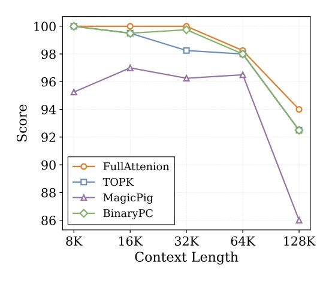
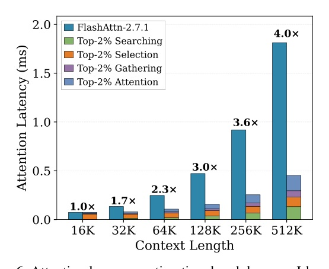

BinaryPC: training-free data-aware 64-bit hashing for long-context LLM decoding.

把 KV retrieval 從 full-precision attention score，換成 data-aware 64-bit binary score。
關鍵不是 random LSH，也不是訓練 hash net；BinaryPC 用 min ||K - HP||F 找出能重建 key geometry 的 binary components。
H 與 projection P。
H 是每個 key 的 compact binary code；P 是讓 binary code 能重建 key 的 projection。qPT，再做 quantized bit packing。R = K.v*, compute u = sign(Rv*T).v = uR/N, update R ← R - uTv.u to H and v to P.P, represent k using rows of P.
qPT quantized into H sign bits + H 7-bit magnitudes。h stored as compact binary words；64-bit code fits in one int64。| mode | how P is built | trade-off |
|---|---|---|
| Online | current input keys K | no calibration dataset; one-time prefill overhead |
| OPC | 180 samples: PG19 / ProofPile / CodeParrot | lower inference overhead; deployment-friendly |
| Method | Budget | 8K | 64K | 128K | Avg. |
|---|---|---|---|---|---|
| Full | Full | 94.32 | 85.19 | 76.49 | 87.41 |
| MagicPIG | Default | 91.28 | 83.96 | 72.07 | 84.68 |
| Quest | 2K | 92.36 | 78.45 | 65.39 | 81.96 |
| BinaryPC | 2K | 94.47 | 85.09 | 72.89 | 87.06 |

| Setting | BinaryPC | Full | MagicPIG | Source |
|---|---|---|---|---|
| Short Llama-3.1-8B avg | 70.81 | 72.74 | 64.23 | Table 2 p.6 |
| LongBench Llama-3.1-8B avg | 49.66 | 49.64 | 49.01 | Table 3 p.6 |
| LongBench Mistral-7B avg | 47.38 | 47.31 | 47.06 | Table 3 p.6 |

| Context(batch) | FlashAttn-2 | MagicPIG | BinaryPC | BPC gain |
|---|---|---|---|---|
| 32K (1) | 45.31 | 20.28 | 47.61 | 1.05x |
| 32K (4) | 123.98 | 57.06 | 167.72 | 1.35x |
| 64K (4) | 87.62 | 42.05 | 148.46 | 1.69x |
| Variant | EAS | R.PK | Avg. |
|---|---|---|---|
| Full Attention | - | 99.00 | 47.92 |
| BinaryPC | 0% | 64.00 | 41.30 |
| BinaryPC | 2% | 99.00 | 47.42 |
| BinaryPC | 10% default | 99.00 | 47.41 |
| Hash bits | 104K | Avg. | Engineering note |
|---|---|---|---|
| 32-bit | 71.82 | 86.37 | too short; retrieval drop |
| 64-bit | 92.73 | 90.18 | one int64 word |
| 128-bit | 90.91 | 90.00 | similar accuracy, more bits |
| Metric | Full Attention-70B | BinaryPC-70B |
|---|---|---|
| LongBench M-Doc | 47.51 | 47.78 |
| LongBench Code | 54.24 | 55.22 |
| Attention latency avg | 0.617 ms | 0.244 ms |
BinaryPC work 的原因：重建誤差同時服務 retrieval fidelity、outlier detection、和 GPU packing。
||K - HP|| 讓 binary score 對齊資料幾何，不是 random projection。||k - hP|| 讓 hard-to-hash token 被 EAS 保留。At a 128K context length, MagicPIG falls 6.5 percentage points below oracle TOPK, which itself remains nearly identical to the full-attention baseline.
128K 時 MagicPIG 比 oracle TOPK 低 6.5 percentage points，而 oracle TOPK 幾乎貼近 full attention；這直接指出 random LSH 的 data-agnostic 問題。Intro p.2
Given key vectors K, BinaryPC constructs compact binary hash codes H and a hashing projection P by computing binary principal components of K, which minimizes the reconstruction error ||K - HP||F.
BinaryPC 的根本不是訓練一個 hash net，而是以重建 K 的方式求 binary components 和 projection。Intro p.2 / Eq.2 §3.2 p.3
Taking the 512K length setting as an example, these three stages introduce a combined overhead of 295 µs, but BinaryPC can reduce the FlashAttention kernel invocation time from 1.814 ms to 163 µs.
search/select/gather 的 overhead 不是免費，但被 attention kernel 大幅縮小所抵消，512K 單層可到 4.0x。§4.2 p.8
without EAS, R.PK drops to 64.00 and the average score falls to 41.30, while a minimal 2% budget fully recovers R.PK to 99.00.
EAS 是 hard-to-hash recall 的必要保險，不是錦上添花。§4.3 p.8 / Table 5 p.9
Each hash code uses 8 bytes per token per KV head when stored as an int64, while the BF16 KV cache uses 512 bytes per token per KV head, so the hash-code overhead is only 1/64, or approximately 1.56%, of the KV-cache size.
64-bit hash 的額外記憶體相對 BF16 KV cache 只有約 1.56%，使 70B scale 仍可行。App.B.4 p.17
BinaryPC 的價值在於把「長 context attention」重寫成 data-aware retrieval + tiny attention 的 kernel problem。